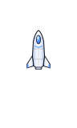
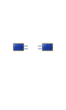
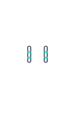
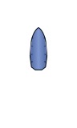

Each tile stacks the part files from design/assets/ship/ in the draw order: back modules → engine → hull → front modules → damage. All parts share one 96 × 160 frame with the ship centre at (48, 64). Shown at 2×; the game draws the base hull 22 px long.
Builds2× · engines firing


Base hullchemical enginethe starting ship


Explorerion · solar · tanks · sensorslong range, slow burnsHarvesterchemical · scoop · tanks · cryolives off nebulae and gas giants


Fully upgradedpulse · every moduleheaviest: every upgrade costs mass
Engines2× · each with its own nozzle and plume, blue → violet
Chemicalbell nozzleflickering plume (the game's current plume)Iongridded platelong, thin, steady beamPulsepusher platea flash every 0.6 s